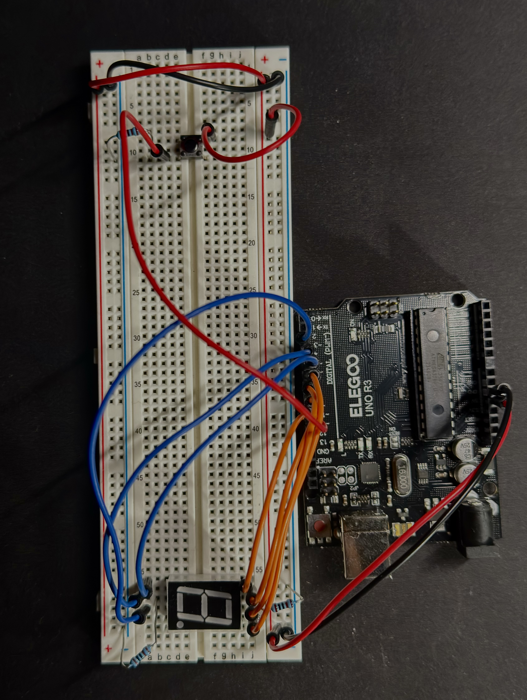
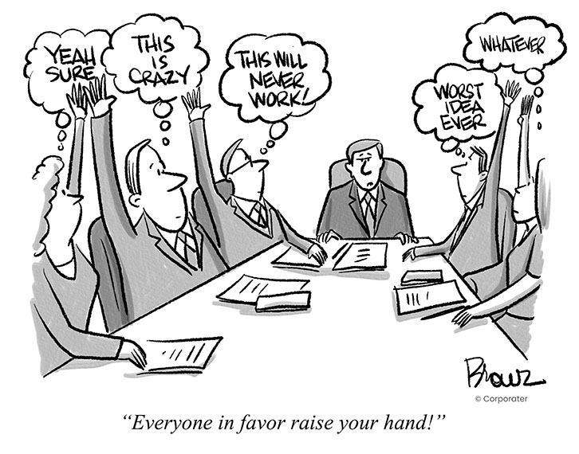
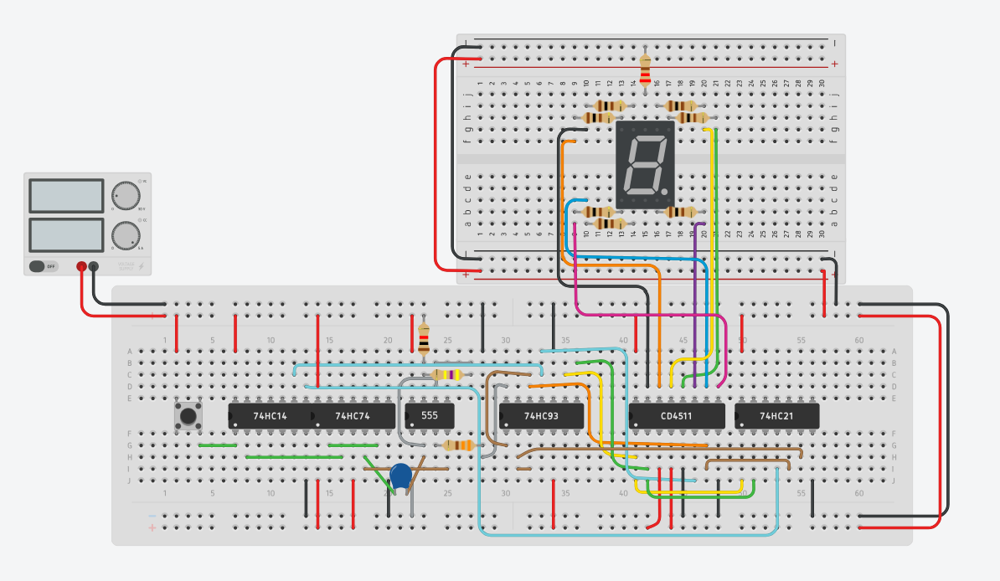
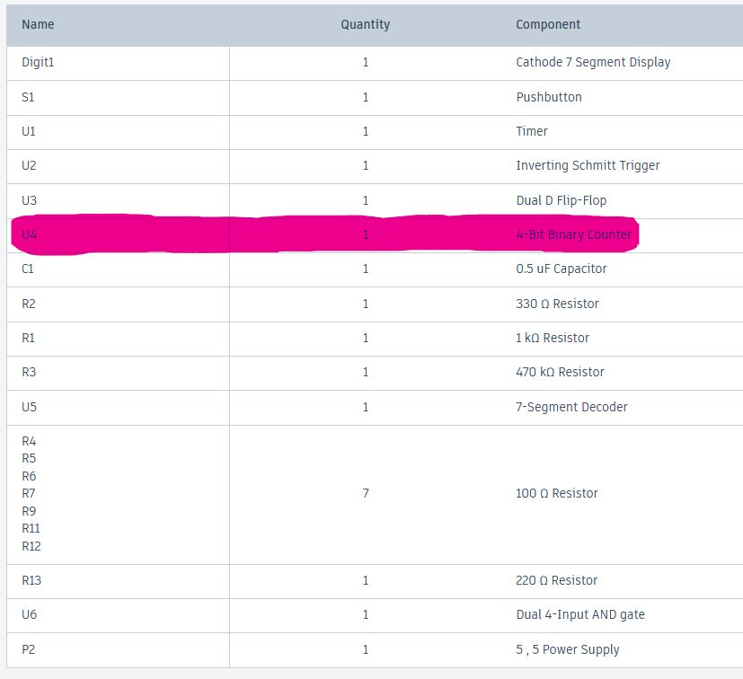
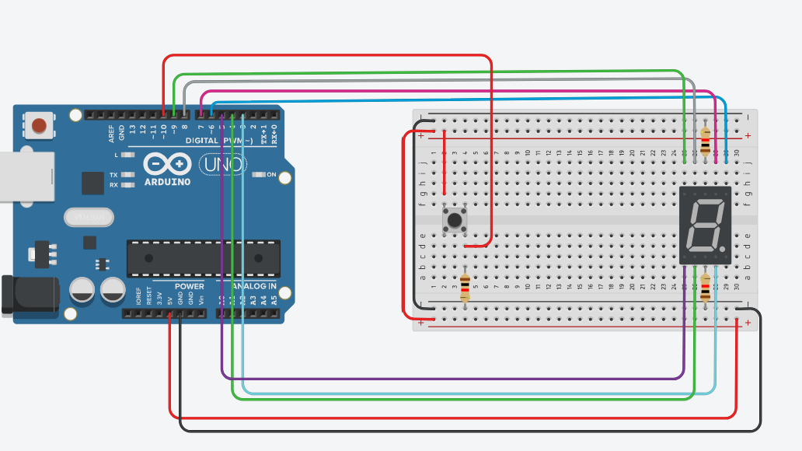
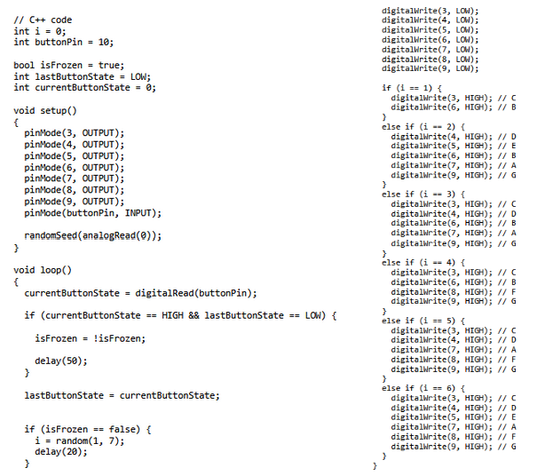

ECE 1100 Discovery Project • Fall 2025

I created this project as a way to both challenge myself and solve a real-world issue that I was having. Throughout my first semester here at Georgia Tech, I have found myself in group scenarios where a decision must be made, and with conflicting plans, ideas, or decisions, we often have to flip a coin or roll a dice.
Because of this, I wanted to create a dice that has the same function as a real dice, being able to rank someone based on how high of a number they get.

Goal: Build the logic from scratch using discrete Integrated Circuits.
The process used TinkerCAD to simulate the circuit before building. The design relied on four key components:

I decided to go to The Hive to build my project in real life. However, when I went there, I found that there were no 4-bit binary counters available.
This led me to consider using up/down counters or other ways of counting, but I realized this would take up too much space on the breadboard, especially with the components I already had installed. Because of this hardware constraint, I decided to divert my plans.

Wanting to make the project more compact and use the resources I had around me, I decided to use my roommate's Arduino kit to make the digital dice.
What I had to learn: Arduino IDE, C++
Luckily, TinkerCAD also has Arduino simulation software within it, so I was able to make a mock simulation to test the design again.

Already knowing Python and C at a basic level, I was able to watch a couple of videos on how to code with the Arduino in C++.
Using the Tinkercad simulation I made, I was able to simply connect the breadboard to my Arduino, as the simulation acted as a blueprint I could follow.

The final result is a fully functional digital die. The device successfully replicates the probability of a physical die using the `random(1, 7)` function in C++, displayed instantly on the 7-segment display when the button is pressed.